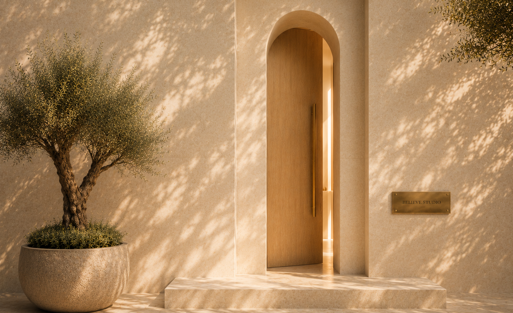
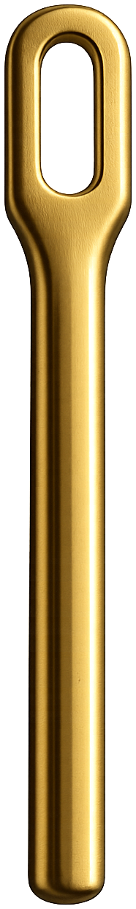

{{ coverDust }}Come in.
We’ve been expecting you.
Come in.
We’ve been expecting you.

{{room.whisper}}
{{para}}
“{{active.quote}}”
{{active.question}}
{{active.questionSub}}
{{active.oneLine}}
Some ideas are shaped quietly at the worktable. Others become clearer through conversation.
{{active.oneLine}}
{{active.oneLine}}
“{{story.text}}”
Architecture brings people together.
Conversations change them.
Some rooms are kept for those who belong to the house. A key is not a subscription — it is an invitation to stay longer, and to be known.
With a key, Private Advisory and the Stage open to you.
One day this building will stand in more than one city. Never built new, never the same twice — each a place with a memory: a former bank, a printworks, a townhouse restored. The same rooms, the same rituals. What stays constant is not the architecture. It is how it feels to be inside.
Not a business plan.
A foundation.
Architecture gives buildings their structure.
Clarity gives founders the confidence to build theirs.
Before strategy. Before growth. Before execution. We begin by understanding the architecture of what you’re building.
Every Believe Blueprint is a living strategic document that captures the foundation of your company — your vision, priorities, opportunities, blind spots, decisions, and next chapter.
Just as an architect begins with a blueprint before laying the first stone, every founder begins with clarity before building what comes next.
Every Believe Blueprint is created from the ground up. Never templated. Never generated. Always built around the founder, the company, and the decisions that matter most.
No two Blueprints are alike because no two founders are alike.
Every Blueprint begins with a conversation.
Not because we already know the answers. Because asking better questions is where meaningful companies begin.
The Believe Blueprint becomes the foundation for everything that follows.
For many founders, that next step is The Founder’s Room.
Ideas caught before they disappear. Gathered from hundreds of conversations, still accumulating.
{{fn.obs}}
{{fn.hand}}
Every conversation leaves something behind. This is where it is kept.
Every meaningful house eventually becomes a library.
Not because it collects books.
Because it collects wisdom.
Some of it printed.
Some of it spoken.
Some of it quietly left behind by the people who once sat here.
Not recommendations. The books we return to — the ones that shaped how Believe Studio thinks.
{{b.why}}
Notes founders tucked inside a favorite book, and never took back.
“{{m}}”
Not books. Artifacts.
Every meaningful company leaves something behind. These are a few of ours.
{{o.story}}
{{o.lesson}}
One day, an object of yours might rest here too.
Not biographies. Caretakers. Each one quietly keeps a different shelf.
Observations, caught before they disappeared. This shelf grows slowly, over years.
{{n}}
Everything preserved. Nothing forgotten.
Some wisdom simply waits a little higher than expected. The ladder exists for the moments when experience needs a little help finding you.
Take this with you.
Sometimes you’ll leave with a book.
Sometimes with a question.
Sometimes with the courage to keep building.
Close the book. Keep building.
There is a difference between talking about a company and sitting across from someone who helps you finally see it clearly.
The Table exists for those conversations.
Some last twenty minutes.
Some last three hours.
Almost all of them change something —
not because advice was given,
because clarity arrived.
What decision have you already made… but haven’t admitted to yourself yet?
Sit with it. The table isn’t in a hurry.
Sometimes someone realizes the company they wanted to build isn’t the one they actually want to lead.
Sometimes one honest question changes an entire strategy.
Sometimes nothing changes on paper. Everything changes in the founder.
Sometimes the next chapter begins over coffee.
“Nobody solved my problem. They simply helped me hear the answer I’d been avoiding.”
No two gatherings are ever exactly the same. Because no two founders are.
Jillian quietly keeps conversations alive long after everyone leaves the table. She listens for the sentence a founder almost didn’t say — because those are often the ones worth building around. If you spend enough time here, you’ll probably find Jillian nearby.
Every meaningful conversation begins the same way. Someone chooses to sit down. The chair isn’t reserved for experts. It’s reserved for honesty.
Some conversations change companies. The best ones change founders.
Your chair is waiting. Come when you’re ready.
There is no single way to work with Believe Studio. Every founder arrives carrying different questions. Some begin with a Blueprint. Others join The Founder’s Room. Some seek Private Advisory. Others simply pull up a chair Inside the Studio.
The path is yours. The destination is greater clarity.
{{w.forWhom}}
{{w.body}}
The house between visits.
For founders who want to stay connected to the conversations, stories, and people of Believe Studio between visits.
Some of the most important founder conversations are the ones no one else ever hears.
Some conversations should never become case studies. Not every decision belongs in a board meeting. Not every question belongs on LinkedIn. Some of the most important moments in a founder’s journey happen quietly — before the announcement, before the funding, before the launch, before anyone else knows.
Private Advisory exists for those moments — when the stakes are unusually high, when clarity matters more than speed, when you need someone who can hold both the business and the person building it.
No audience. No performance. No templates. Just thoughtful conversation, honest perspective, and decisions made with care.
Sometimes it’s growth. Sometimes uncertainty. Sometimes a difficult retailer conversation. Sometimes preparing for Target. Sometimes rebuilding after success. Sometimes deciding whether to walk away.
Every conversation is different, because every founder is.
No engagement follows a template. Every advisory relationship begins with listening.
Some conversations deserve a room of their own.
Private Advisory is designed for founders leading meaningful companies who want a trusted thought partner — not another consultant.
Some engagements last a single day. Others continue for years. There is no standard timeline — only the work that needs to be done.
Every private advisory relationship begins the same way. A conversation.
No proposal. No presentation. No pressure. Just enough time to discover whether we’re the right people to build together.
Not because it seeks attention. Because the work is ready to be seen.
Some founders step onto a stage. Some onto a trade show floor. Some into a buyer’s office. Some behind a microphone. Some onto a retail shelf.
Every milestone looks different. But each one begins long before anyone is watching.
The Stage is where the quiet work inside Believe Studio meets the world. Where conversations become launches. Ideas become products. Introductions become partnerships. Belief becomes momentum. Some moments are celebrated publicly. Others are remembered quietly. Both belong here.
{{m.b}}
Every founder deserves a stage. Not to perform. To be remembered.
Not bright. Not theatrical. Just enough light to reveal what has quietly been built.
Recognition is never the goal. It is simply what happens when meaningful work becomes impossible to overlook.
Long before anyone applauds, someone first has to believe.
Everything inside this house exists to help founders reach that moment.
Most companies sell you something. A house simply lets you in.
Believe Studio is built as a house because a founder’s journey is not a product to be purchased. It is a path to be walked.
So instead of packages and tiers, there are rooms. Each one exists because founders need something different depending on where they are — a place to think, a table to gather at, a library of borrowed wisdom, a quiet room to decide.
No founder walks the same path through the house. And yet every room, in its own way, leads toward the same thing: greater clarity about what you are building and why.
Fall in love with the house first. Choosing a room becomes the natural next step.
Believe Studio isn’t built by one person. It’s cared for by people who believe founders deserve extraordinary places to think, build, and belong.
Some you’ll meet immediately. Others quietly shape your experience behind the scenes. Together, they keep the light on.
…{{p.when}}
{{p.belief}}
Once a month, a Resident Expert is welcomed into Believe Studio for one evening. Not a guest speaker. Not a webinar. Someone trusted, invited into the house the way you’d invite a friend.
{{s.note}}
Every meaningful partnership begins with a conversation.
Believe Studio was never built around a single program, because the best advice for one founder can be the wrong advice for another. So there is no curriculum here. Only thoughtful guidance, better decisions, and the unique journey of the person building.
A place founders come to think more clearly, make better decisions, and build more meaningful companies.
Founders arrive carrying questions. They leave carrying clarity.
Not a business plan.
A foundation.
Before strategy. Before growth. Before execution. We begin by understanding the architecture of what you’re building.
Every Believe Blueprint is a living strategic document that captures the foundation of your company — your vision, priorities, opportunities, blind spots, decisions, and next chapter.
Just as an architect begins with a blueprint before laying the first stone, every founder begins with clarity before building what comes next.
Because no founder walks the same path — and no meaningful company should be built from someone else’s.
Every Believe Blueprint is created from the ground up. Never templated. Never generated. Always built around the founder, the company, and the decisions that matter most.
The Blueprint becomes the foundation for everything that follows inside The Founder’s Room.
Every Blueprint begins with a conversation.
Some conversations begin with growth. Others begin with exhaustion. Some begin with retail expansion. Others with rebuilding confidence after a difficult season.
The Founder’s Room adapts to the founder — not the other way around. Together we think, refine, challenge assumptions, make difficult decisions, and build meaningful companies.
No two journeys are identical.
No two Blueprints are alike. No two founder journeys are alike.
Most founder programs begin with a curriculum.
We begin with a conversation.
A partnership isn’t a set of sessions. It’s a rhythm you can build a company inside of. Every partnership includes:
Once a month, a single, beautifully written letter. Not a newsletter. Not updates. A letter from one founder to another — what we’re seeing, learning, and wrestling with, and what the conversations revealed that month.
Not content. Companionship.
A one-time strategic foundation — the first step for founders seeking clarity before their next chapter.
An ongoing advisory partnership for founders building meaningful companies.
Stay connected to the conversations inside Believe Studio.
A custom strategic foundation designed around your company, your vision, and your next chapter.
An ongoing private advisory partnership for founders building meaningful companies.
Stay connected to the conversations happening inside Believe Studio.
Monthly conversations with Resident Experts.
Not every founder begins in the same room. Every founder begins somewhere.
Every partnership begins with a conversation. If it feels like the right place for both of us, we’ll send your invitation — and with it, the key. Not because the door was ever locked, but because every meaningful house deserves a proper welcome.
Founders arrive carrying questions.
They leave carrying clarity.
Founders who came to think more clearly — in their own words.
“{{s.quote}}”